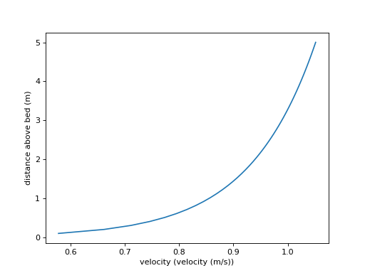

proffilo.profile.LogLawProfile¶
-
class
proffilo.profile.LogLawProfile(flow_depth, z0, ustar, alpha=1, nz=50)¶ Log-law velocity profile model
Log-law velocity profile model, defined by
\frac{u}{u_*} = \frac{1}{\alpha \kappa} \ln \left( 30 \frac{z}{k_s} \right)
Also known as the Law-of-the-wall.
Examples
- Initialize a log-law model profile.
>>> from proffilo.profile import LogLawProfile >>> import proffilo.velocity >>> fd = 5 # flow depth >>> z0 = ks = velocity.compute_roughness_z0(300e-6) # roughness height >>> ustar = 0.05 # shear velocity >>> ll_prof = LogLawProfile(fd, z0, ustar)
- Visualize the profile.
>>> ll_prof.show_profile()
(Source code, png, hires.png, pdf)
-
__init__(flow_depth, z0, ustar, alpha=1, nz=50)¶ Initialize a LogLawProfile.
Calls
compute_values()once.- Parameters
depth (flow) – Flow depth [m].
z0 (float) – Roughness height [m].
ustar (float) – Shear velocity [m/s].
alpha (float, optional) – Stratification coefficient, default is 1.0 [-].
nz (int, optional) – Number of discrete vertical coordinates in
z, default is 50.
Methods
__init__(flow_depth, z0, ustar[, alpha, nz])Initialize a LogLawProfile.
Compute velocity profile.
show_profile([block, savestr])Show the profile.
Attributes
Stratification adjustment coefficient [-].
Flow depth [m].
Shear velocity [m/s].
Value of profile vector.
Velocity values.
Vertical coordinate vector.
Roughness height [m].
Normalized vertical coordinate vector.
-
property
alpha¶ Stratification adjustment coefficient [-].
-
compute_values()¶ Compute velocity profile.
Compute the velocity profile from
selfattributes. This method is called once during__init__(), but can be called to recompute values, as needed.
-
property
flow_depth¶ Flow depth [m].
- Type
float
-
show_profile(block=False, savestr=None, **kwargs)¶ Show the profile.
Show the profile in a plot.
Note
This function requires matplotlib.
- Parameters
block (bool, optional) – Whether to pause script execution by showing the plot. I.e., the
blockargument in matplotlib’splt.show().savestr (str, optional) – String to save the output file. If given
blockis set to False.**kwargs (optional) – Any arbitrary
matplotlib.pyplot.plot()keyword arguments for the plot specification.
- Returns
- Return type
None
-
property
ustar¶ Shear velocity [m/s].
- Type
float
-
abstract property
val¶ Value of profile vector.
-
property
velocity¶ Velocity values.
Profile velocity values along the
zcoordinate.
-
property
z¶ Vertical coordinate vector.
Vertical coordinate vector [m].
- Type
ndarray
-
property
z0¶ Roughness height [m].
- Type
float
-
property
z_norm¶ Normalized vertical coordinate vector.
Values are normalized into the interval [0,1], by dividing z by the flow_depth.
- Type
ndarray
{kind=link}
{kind=link}